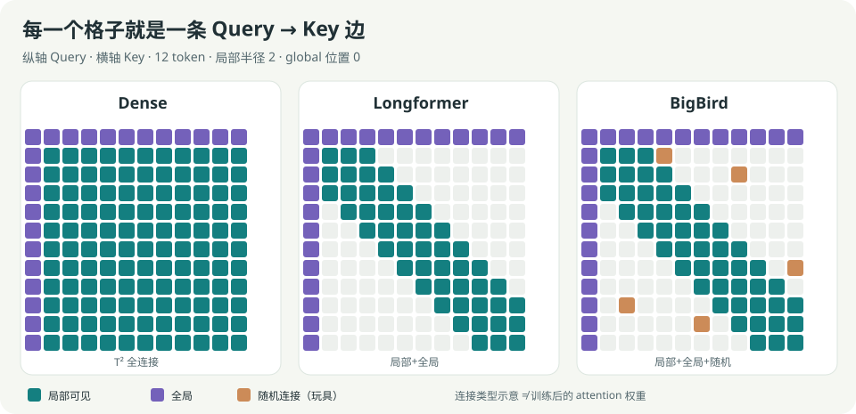
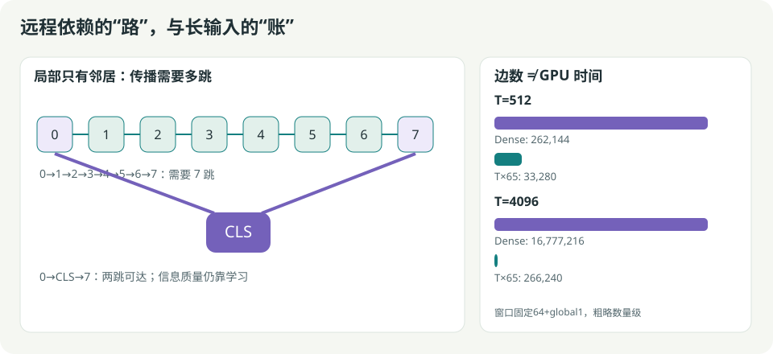

1. 长文档遇到的不是单一“512 限制”
标准自注意力对长度为 T 的文本建立每个 Query 和每个 Key 的相似度。单头 score 是 [T,T]，多头 batch 布局常为 [B,h,T,T]。从 512 增到 4096 token，序列长度增加八倍，而稠密注意力配对数增加 64 倍。位置嵌入上限、显存与训练数据长度同样影响模型能否直接扩展。
FlashAttention 可以改善精确注意力的 IO 与激活存储，但不自动消除每对 Q/K 的计算。Longformer、BigBird 走另一条路线：直接改变允许计算的边，既要减少边数量，又要保留长距离信息路径。

2. 把复杂度写成可以核算的边数
设普通 token 的固定局部邻居数约为 w、全局 token 数为 g。从每个普通位置到局部与全局位置，加上全局位置指向全文的边，经过重叠去重后，pair 数量级可写为：
这是边数上界的数量级，不等于完整 Transformer 的 FLOPs：Q/K/V 投影与 FFN 仍要计算，window 边界会截断、global 边会重叠，block padding 会浪费运算。只有在 w、g 相对 T 固定时才可说 attention 边数随长度近线性增长。
更重要的是 kernel 实现。如果先物化全部 T² score，再把部分设为 −∞，语义上是稀疏 mask，实际计算却可能依旧稠密。要得到节省需专用 sliding-chunks / block-sparse 实现。
3. Longformer：窗口负责近邻，全局负责汇聚与广播
普通位置 i 的局部窗口可覆盖 [i−r,i+r] 内有效 token；dilated window 允许在固定邻居预算中跳着读取远一些的位置。局部传播需要多层：一层从邻居获取信息，两层间接获取邻居的邻居。
Longformer 还按任务设置 global attention，例如分类中的 CLS 或问答中的问题 token。全局位置能关注全部非 padding token，普通位置也能读全局位置。这使原本很远的两个位置可以经过中继相连。原论文的全局注意力可以使用区别于局部注意力的 Q/K/V 投影，不能笼统理解为单纯把窗口改成全文。
全局桥接并不保证所有远端证据都被无损保存：global hidden state 的维度有限，注意力还需要学会挑选有用证据。对于长文档摘要，Longformer-Encoder-Decoder（LED）包含 decoder，不能与只做编码的 Longformer 模型接口混同。
4. BigBird：窗口、全局与随机连接的三个角色
BigBird 组合局部 window 边、global 边和 random 边。局部边帮助组合相邻词组；global token 聚合文档信息；随机边在稀疏边预算下制造跨距离捷径。Google 官方参考代码以 block_size、num_rand_blocks 与特定窗口/全局 block 组织连接，不是简单为每个 token 任意生成几条随机边。
BigBird 论文给出在特定结构假设下保留 Transformer 表达性的理论结果，包括 universal approximation 等性质。它们不意味着一份随意设定 window=3/random=1 的有限深度模型在任何数据集都等价于稠密注意力；理论表达能力和固定硬件预算的泛化能力是两回事。
复现时必须记录随机连接生成方式、block padding、跨块 mask 与种子。很多实现要求序列长度满足 block size 的特定布局，末尾 padding 是算力成本的一部分。
5. 看信息路径，而不只是看单层矩阵
假设只有相邻位置互连，位置 0 与位置 7 的信息沿图需要经过 7 条边。每堆叠一层 Encoder，隐状态最多从其可见邻居获得一轮信息；短层数下两端证据未必能互相作用。加入可双向通达的全局 CLS，图上路径可降为 0→CLS→7 两跳。
这是可达性，不是准确率证明。真实 attention 的方向、归一化值、头数和有限 hidden capacity 会决定信息是否传到目标位置。随机边也可降低图直径，但并不能保证它们恰好将任务需要的两处证据连起来。

6. 实现审计：mask、张量与归一化轴
输入 IDs 通常为 [B,T]，隐藏状态 [B,T,H]，Q/K/V 可整理为 [B,h,T,d]，其中 d=H/h。普通 dense score 是 [B,h,T,T]；稀疏实现可将普通 query 的局部候选整理为 [B,h,T,w]，另存 global 分数。BigBird 更可能以块索引和分块 matmul 实现，因此不必显式创建逐 token 的 T×w。
合法候选 key 的 score 在key 维执行 masked softmax，每个有有效 key 的 query 行概率和应为 1。测试至少覆盖 padding、首尾边界、全局 key 与普通 key 重复边的去重、随机块无重复/禁止区的规则。若使用 dense kernel 伪装稀疏 mask，数学正确不代表复杂度目标达成。
7. 实验设计：长上下文究竟改善了什么
先统计实际文档长度分布与证据位置。如果 90% 样本在 512 token 内，就算模型支持 4096，长文优势也可能无法显现。问答评估应按答案位于开头、中间、结尾分层；同时报告 EM/F1、文档截断率、峰值显存、token/s 与同设备的 p50/p95 latency。
对照 Longformer 与 BigBird 时，必须限定 tokenizer、训练语料、长输入 position 处理、训练步数或 FLOP 预算、具体 checkpoint、global mask 和 batch/precision。论文在当时数据集上的效果报告不能直接推成“随机边一定优于无随机边”。
8. 交互一：一行注意力矩阵究竟哪些 Key 可见
目标查询 i=6，序列共 12 个位置
固定半径 r=2、全局 0，随机位置 10 仅用于教学。实际 BigBird 多使用 block-level 连接。
Dense：i=6 可读取 0…11，共 12 个 Key。 整个 12×12 可见矩阵有 144 条边。 注意：连接集合不等于注意力权重大小。
9. 交互二：窗口变宽如何蚕食理论优势
序列 4096、全局 token 约 1 个
只用 T×(w+g) 估算 pair 数；实际还需要计算 Q/K/V、FFN 和专用 kernel 开销。
Dense：4096² = 16,777,216 个 pairs。 粗略 sparse：4096×(64+1) = 266,240 个 pairs。 边数比约 63.0×；这不是硬件实测加速。
10. 本篇实验不应推出的结论
- 随机边可以改善稀疏图连通性，但不保证跨任务质量一定优于纯局部＋全局。
- 算出 63× fewer pairs 绝不表示 GPU 延迟一定降低 63×；kernel、FFN、数据传输都影响实际结果。
- 全局 token 是有限宽度的网络状态，不是无限容量的外部检索库。
- 把文本机械填充到 4096 并不等于输入中真实包含 4096 个有效 token；padding 位置必须正确 mask。
关键结论
- Longformer：局部窗口与任务指定的全局位置；BigBird：局部、全局及随机块连接。
- 线性边数须保证 w、g 有界，并使用真正的稀疏 kernel；attention 与整体网络 FLOPs 不可混同。
- 图论连通性和任务指标不同；长文 QA 要看证据位置、截断率和真实设备性能。
原论文与代码
- Longformer，§2–4; Figure 2。
- BigBird，§2–4; Figure 1。
- Longformer 官方仓库，README; sliding/global attention。
- BigBird 官方实现，README; block_size / num_rand_blocks。
- FlashAttention，§2–3; exact attention 与 IO。